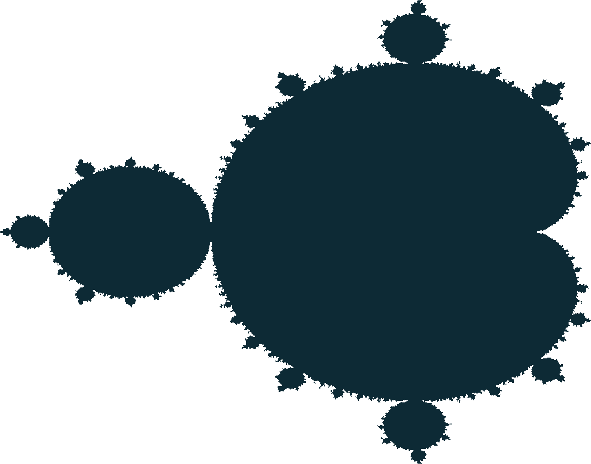

Mandelbrot Set Visualization
Description:
- Plotted the mandelbrot set with color gradient corresponding to time to diverge
- Added ability to zoom in on interesting areas of mandelbrot set to view them in greater detail
- Created ability to sync up animation to match the beats per minute of a song
Deployment: Go to Site
Source code: Github Repository
Close tab